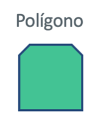

# install.packages("sf")
library(sf) # manipulación de datos vectoriales
library(mapview) # visualización de mapas dinámicos
library(ggplot2) # gráficos
library(RColorBrewer) #paleta de colores2 Datos Espaciales
Módulo 1: Práctico
2.1 Objetivos del Módulo
La presente Sesión tiene como objetivo principal introducir conceptos generales y manipulación básica de datos de tipo vectorial (punto, lineas, polígonos) y Raster, ambos con casos prácticos.
2.2 Definición General de Datos Espaciales
La representación de un territorio requiere datos geográficos compuestos por información espacial (geometrías asociadas a una ubicación real en el mundo) e información de atributos (características y variables asociadas a estas geometrías). Los tipos de datos espaciales principalmente los vectores y raster.
2.3 Datos Vectoriales
- Datos Vectoriales
- Representación mediante coordenadas que se pueden unir espacialmente o no. Corresponde a 3 tipos de geometrías: puntos, líneas y polígonos.

Fuente: https://r-spatial.github.io/sf/articles/sf1.html
- Puntos
- Tiene un par de coordenadas “x” e “y”. Es utilizado para información de tipo puntual, como por ejemplo equipamiento urbano, postes, árboles, entre otros.
Cargar librerías
2.3.1 Lectura de archivos tipo puntos
sii_LC <- st_read("data/sii/sii_urbe_LC.shp")Reading layer `sii_urbe_LC' from data source
`/Users/denisberroeta/Documents/Docencia/Goblab/geoanalisis_book/data/sii/sii_urbe_LC.shp'
using driver `ESRI Shapefile'
Simple feature collection with 2310 features and 11 fields
Geometry type: POINT
Dimension: XY
Bounding box: xmin: -70.60645 ymin: -33.44471 xmax: -70.47083 ymax: -33.36548
Geodetic CRS: GCS_unknown2.3.2 Visualización de los puntos
# Visualización ggplot y sf
ggplot() +
geom_sf(data = sii_LC, col = "orange", alpha=0.8, size= 0.5)+
ggtitle("Datos del SII en Las Condes" ) +
theme_bw() +
theme(legend.position="none")+
theme(panel.grid.major = element_line(colour = "gray80"),
panel.grid.minor = element_line(colour = "gray80"))
# mapview(sii_LC, zcol = "atractor", cex =2)- Líneas
- Tiene tantas coordenadas como vértices. La información que representa es de tipo lineal, como por ejemplo calles, ríos, redes energéticas, entre otros. Existen las líneas cerradas, las cuales se pueden entender como el perímetro de una superficie (sin relleno).
2.3.3 Lectura de líneas
las_condes_red <- readRDS("data/redes/RED_LAS_CONDES.rds")
# las_condes_red2.3.4 visualización Líneas
ggplot() +
geom_sf(data = las_condes_red, col = "gray70", alpha=0.8, size= 0.5)+
ggtitle("Red víal de la comuna Las Condes" ) +
theme_bw() +
theme(legend.position="none")+
theme(panel.grid.major = element_line(colour = "gray80"),
panel.grid.minor = element_line(colour = "gray80"))# mapview(las_condes_red)- Polígonos
- Tiene tantas coordenadas como vértices. La información que representa es de tipo área, como por ejemplo división política administrativa, manzanas, construcciones, entre otras.

2.3.5 Lectura de polígonos
las_condes_mz <- st_read("data/shape/icv_las_condes.shp", quiet=T)
# las_condes_ptos2.3.6 Visualización polígonos
ggplot() +
geom_sf(data = las_condes_mz, aes(fill = veg_cob), color ="gray80",
alpha=0.8, size= 0.1)+
scale_fill_distiller(palette="Greens", direction = 1)+
ggtitle("Cobertura Vegetal de la comuna Las Condes" ) +
theme_bw() +
theme(panel.grid.major = element_line(colour = "gray80"),
panel.grid.minor = element_line(colour = "gray80"))
# mapview(las_condes_mz, zcol = "veg_cob")Tabla General de tipo de Datos Vectoriales
| type | description |
|---|---|
| POINT | zero-dimensional geometry containing a single point |
| LINESTRING | sequence of points connected by straight, non-self intersecting line pieces; one-dimensional geometry |
| POLYGON | geometry with a positive area (two-dimensional); sequence of points form a closed, non-self intersecting ring; the first ring denotes the exterior ring, zero or more subsequent rings denote holes in this exterior ring |
| MULTIPOINT | set of points; a MULTIPOINT is simple if no two Points in the MULTIPOINT are equal |
| MULTILINESTRING | set of linestrings |
| MULTIPOLYGON | set of polygons |
| GEOMETRYCOLLECTION | set of geometries of any type except GEOMETRYCOLLECTION |

2.4 Datos Raster
- Raster
- Representación del espacio mediante una matriz de celdas organizada en filas y columnas, donde cada celda tiene un valor que representa información.


Para ejemplificar el uso y ver características de Raster vamos a utilizar una imágenes satelital del Satelite Landsat 8.

Este tipos de imágenes satelitales generalmente contiene una series de de bandas que corresponden a capas de información tipos raster conformando una especie de brick de raster.

Para este ejemplo de visualización necesitamos conocer las bandas satelitales que componen nuestra imagen satelital.

2.4.1 lectura de imagen Raster.
library(raster)
las_condes_raster <- brick("data/raster/OLI_LC.tif")
names(las_condes_raster) <- c("aerosol", "blue", "green", "red" , "nir", "swir1", "swir2", "tirs1")
las_condes_rasterclass : RasterBrick
dimensions : 449, 562, 252338, 8 (nrow, ncol, ncell, nlayers)
resolution : 30, 30 (x, y)
extent : 350505, 367365, 6293905, 6307375 (xmin, xmax, ymin, ymax)
crs : +proj=utm +zone=19 +south +datum=WGS84 +units=m +no_defs
source : OLI_LC.tif
names : aerosol, blue, green, red, nir, swir1, swir2, tirs1
min values : 8465, 7604, 6500, 5924, 5520, 5191, 5197, 5002
max values : 19119, 20517, 21248, 23237, 29344, 30012, 31166, 5512 2.4.2 Visualización Raster
# Visualización de imagen recortada de Las Condes en Color Natural
plotRGB(las_condes_raster, r = 4, g = 3, b = 2, stretch = "lin")
# viewRGB(las_condes_raster, r = 4, g = 3, b = 2)2.5 Sistema de Referencias de Coordenadas

Los sistemas de coordenadas forman la base de cálculo para describir la posición de un punto a partir de mediciones geodésicas: distancias, proporciones de distancias (sin escala) y ángulos. Las coordenadas nunca pueden medirse, solamente se calculan con referencia un sistema de coordenadas bien definido. Los tipos de sistemas de coordenadas principales que existen son:
- Coordenadas elipsoidales
- son la representación de las coordenadas sobre la superficie de un elipsoide determinado, se representan por [φ, λ, h] siendo respectivamente, la latitud, longitud y altura elipsoidal.

- Coordenadas proyectadas o cartográficas
- Según la proyección empleada las coordenadas elipsoidales pueden representarse en un plano, en el caso de Chile continental, se emplea la proyección Universal Transversal de Mercator (UTM), huso 19 y huso 18.
Para hacer reproyecciones en R, se le tiene que asignar el Sistema de Referencia de Coordenadas de dos formas, uno como cadena de texto ("+proj=longlat +datum=WGS84 +no_defs") o como número que corresponde a EPSG (EPSG es el acrónimo de European Petroleum Survey Group) que representan sistema de referencia de coordenadas también.
Para el caso de Chile usamos dos sistemas de referencias de coordenadas:
- Coordenadas elipsoidales (geodésicas):
-
4326 o
"+proj=longlat +datum=WGS84 +no_defs" - Coordenadas proyectadas (métricas):
-
32719 o
"+proj=utm +zone=19 +south +datum=WGS84 +units=m +no_defs"
2.5.1 Reproyectar Vectores
LC_mz_32719 <- las_condes_mz %>% st_transform(32719)
st_crs(LC_mz_32719)Coordinate Reference System:
User input: EPSG:32719
wkt:
PROJCRS["WGS 84 / UTM zone 19S",
BASEGEOGCRS["WGS 84",
ENSEMBLE["World Geodetic System 1984 ensemble",
MEMBER["World Geodetic System 1984 (Transit)"],
MEMBER["World Geodetic System 1984 (G730)"],
MEMBER["World Geodetic System 1984 (G873)"],
MEMBER["World Geodetic System 1984 (G1150)"],
MEMBER["World Geodetic System 1984 (G1674)"],
MEMBER["World Geodetic System 1984 (G1762)"],
MEMBER["World Geodetic System 1984 (G2139)"],
ELLIPSOID["WGS 84",6378137,298.257223563,
LENGTHUNIT["metre",1]],
ENSEMBLEACCURACY[2.0]],
PRIMEM["Greenwich",0,
ANGLEUNIT["degree",0.0174532925199433]],
ID["EPSG",4326]],
CONVERSION["UTM zone 19S",
METHOD["Transverse Mercator",
ID["EPSG",9807]],
PARAMETER["Latitude of natural origin",0,
ANGLEUNIT["degree",0.0174532925199433],
ID["EPSG",8801]],
PARAMETER["Longitude of natural origin",-69,
ANGLEUNIT["degree",0.0174532925199433],
ID["EPSG",8802]],
PARAMETER["Scale factor at natural origin",0.9996,
SCALEUNIT["unity",1],
ID["EPSG",8805]],
PARAMETER["False easting",500000,
LENGTHUNIT["metre",1],
ID["EPSG",8806]],
PARAMETER["False northing",10000000,
LENGTHUNIT["metre",1],
ID["EPSG",8807]]],
CS[Cartesian,2],
AXIS["(E)",east,
ORDER[1],
LENGTHUNIT["metre",1]],
AXIS["(N)",north,
ORDER[2],
LENGTHUNIT["metre",1]],
USAGE[
SCOPE["Engineering survey, topographic mapping."],
AREA["Between 72°W and 66°W, southern hemisphere between 80°S and equator, onshore and offshore. Argentina. Bolivia. Brazil. Chile. Colombia. Peru."],
BBOX[-80,-72,0,-66]],
ID["EPSG",32719]]2.5.2 Reproyectar Raster
# las_condes_raster
crs_latlon <- "+proj=longlat +datum=WGS84 +no_defs"# geográficas o elipsoidales
crs_utm <- "+proj=utm +zone=19 +south +datum=WGS84 +units=m +no_defs" # UTM o cartográficas
las_condes_raster2 <- projectRaster(from= las_condes_raster, crs = crs_latlon)
las_condes_raster2class : RasterBrick
dimensions : 470, 578, 271660, 8 (nrow, ncol, ncell, nlayers)
resolution : 0.000323, 0.00027 (x, y)
extent : -70.61069, -70.424, -33.48775, -33.36085 (xmin, xmax, ymin, ymax)
crs : +proj=longlat +datum=WGS84 +no_defs
source : memory
names : aerosol, blue, green, red, nir, swir1, swir2, tirs1
min values : 8592.067, 7778.388, 6806.291, 6280.802, 5729.628, 5316.893, 5303.627, 5005.409
max values : 18590.84, 19485.05, 20596.61, 22406.07, 28732.09, 26707.17, 26787.15, 5495.00